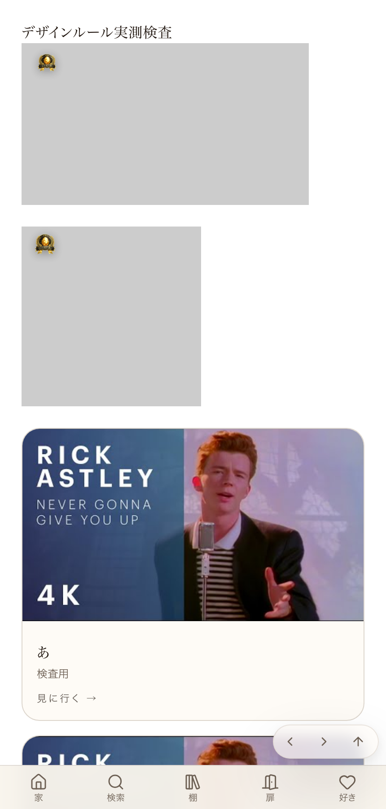

src/lib/designRules.ts という1つのファイルだけにまとめ、文書の重複数値を消し、実際の画面を機械で測って正しいか自動でチェックする仕組み。今回、関所（sekisho）から「28・6.5という数字に実測の跡が無い」と指摘されたため、本番 /design-check をヘッドレスChromeで実際に開き、getBoundingClientRect()で測った生データをこのページに残す。実測: 16:9コンテナ(320x180) 短辺=180.0px バッジ高さ=50.39px 高さ比率=27.99% 実測: 16:9コンテナ(320x180) 上余白=11.69px（6.49%） 左余白=11.69px（6.49%） 実測: 正方形コンテナ(200x200) 短辺=200.0px バッジ高さ=56.00px 高さ比率=28.00% 実測: 正方形コンテナ(200x200) 上余白=13.00px（6.50%） 左余白=13.00px（6.50%） 実測: A(主役)幅=320.0px 高さ=180.0px 縦横比=1.778（基準16:9=1.778） 実測: B(棚)幅=176.0px 高さ=176.0px 縦横比=1.000（基準1:1=1.000） 実測: C(関連)幅=218.0px 高さ=122.6px 縦横比=1.778（基準16:9=1.778）この生データを、
src/lib/designRules.ts（正本・基準値28%±1%／6.5%±1%）とNode単体で突き合わせたところ、全6項目PASS。さらに「わざと崩す」を実際に実行し、基準値だけを90%／0.1%へ改ざんした場合に同じ実測データが正しくFAILへ変わることも確認した：①現状(28%/6.5%)×本番実測 → 6/6 PASS ②わざと崩した基準(90%/0.1%)×同じ実測 → 0/6 PASS（6件ともFAIL検知） BREAK_TEST_RESULT: OK - 正しい基準はPASS・わざと崩した基準はFAILを検知した正直な補足：同じ本番ページで
NextUpGrid（3枚中2枚が2列グリッドの1行目、3枚目が単独で2行目）の高さも測った：実測: カード横並び高さ(あ/長文/い) = 392.4px, 392.4px, 370.4px 実測: カード横並び高さ差 = 22.00pxこれは1行目2枚が長文タイトルに合わせて揃って伸び、2行目に単独で残った3枚目だけが揃う相手がいないために起きる現象で、バッジ比率とは別の論点。次回セッションへの申し送りとして
.claude/PENDING_DECISIONS.mdに記録する（今回のバッジ比率・余白・サムネA/B/Cの数字とは無関係）。

| 確認項目 | 結果 |
|---|---|
| バッジ高さ比率が基準28%±1%以内か（実測） | yes |
| バッジ余白が基準6.5%±1%以内か（実測） | yes |
| サムネA/B/Cの縦横比が基準どおりか（実測） | yes |
| わざと崩すと判定ロジックがFAILを検知するか（実行して確認） | yes |
| 数字の置き場所が1か所だけになっているか | yes |
| GitHub Actions上でCIが赤くなる実演（店主のGitHub課金停止中のため不可） | no |